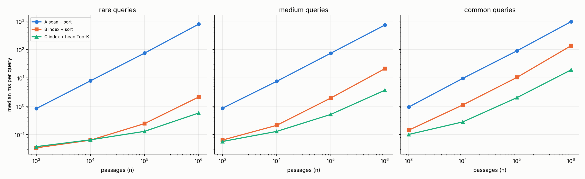
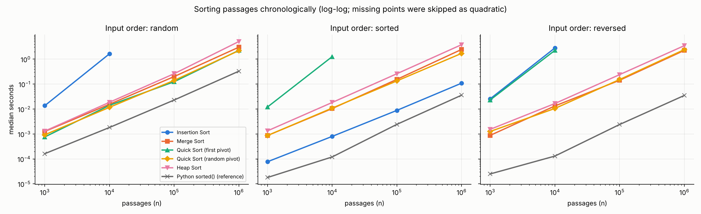
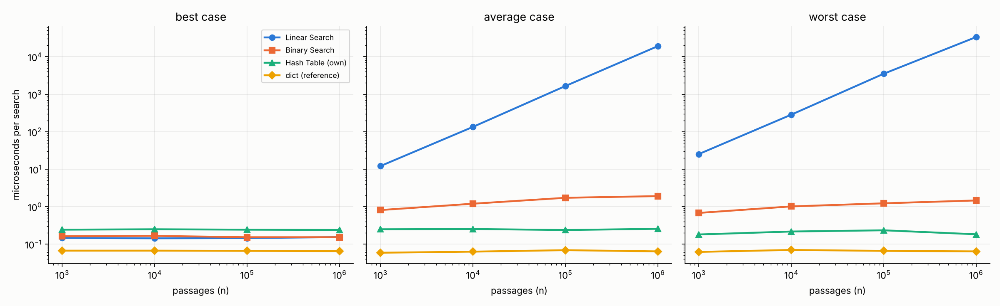
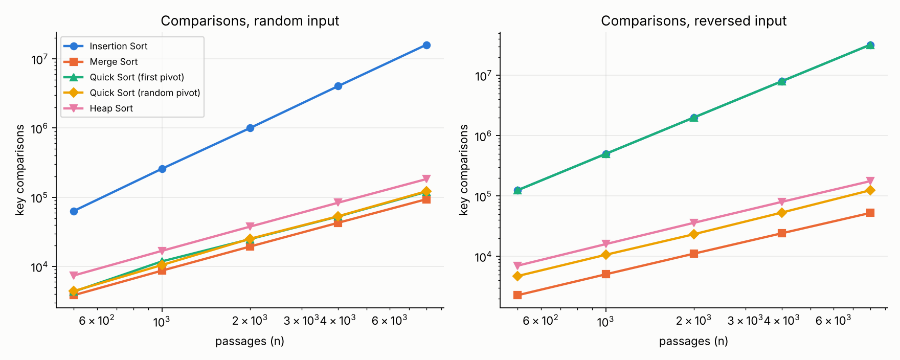
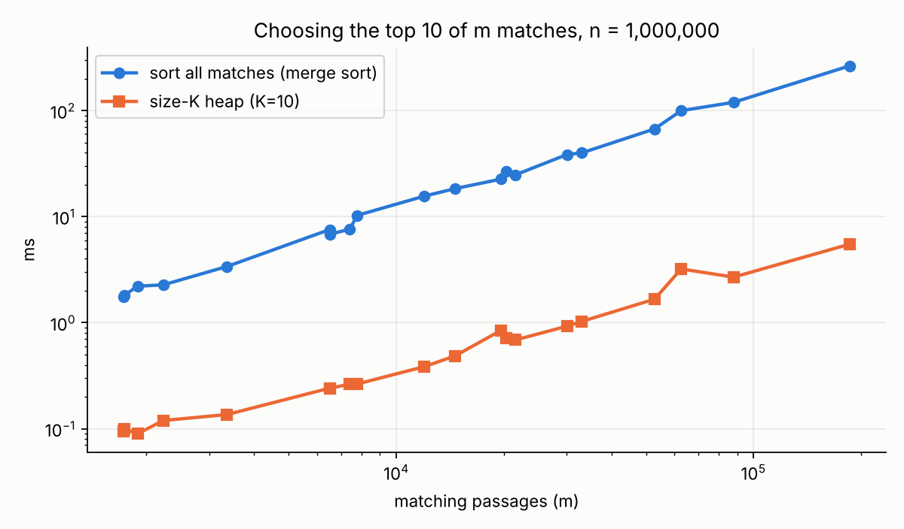
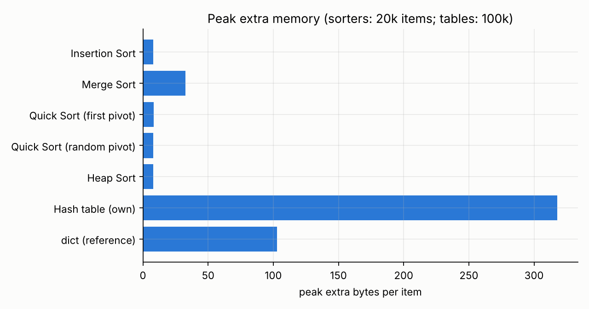

Hand-written sorting, look-up and Top-K search algorithms, benchmarked on one million passages of real U.S. Supreme Court opinions.
Eya Ben Amara · CPS 3440 Analysis of Algorithms · Kean University · Fall 2026

Lawyers spend much of their time reading prior decisions. A research tool must put authorities in date order, open an exact cited passage, and find the few best passages for a concept out of millions. At small scale any method works. At large scale the wrong algorithm turns an instant search into a half-second wait on every query, or an hour-long sort. This project measures where that happens and why.
Supreme Court Decisions (textacy-data v1.0): 8,417 usable decisions from 1946 to 2016, 360 million characters. Text comes from FindLaw; metadata (date, citation) from the Supreme Court Database (CC BY-NC 3.0 US). Each decision is split into sentence-level passages (2,152,182 in total); a seeded random sample of 1,000,000 is used, with 1k, 10k and 100k as nested subsets. Each passage gets a numeric key from decision date, case and sentence number, so it works as a pinpoint citation and a chronological sort key. The raw file is not stored in the repository; one command downloads it. Dataset documentation.
A small Python package, caselaw, with three tasks, each solved by at least three hand-written approaches: sort passages by date, look up a passage by key, and search by keyword returning the top ten. A command-line tool lets a reviewer run each task with any method and see the time taken; benchmark scripts reproduce every number and chart on this page from scratch.
Reviewers can: run python -m caselaw.cli search "equal protection" and choose the method; run pytest for the 68 tests; or run bash benchmarks/run_all.sh to regenerate results.
Python's built-in sorted() and dict appear in charts only as labeled references.
| Algorithm | Time | Extra space |
|---|---|---|
| Insertion sort | O(n²); O(n) if sorted | O(1) |
| Merge sort | Θ(n log n) | O(n) |
| Quick sort | O(n log n) average; O(n²) first pivot on sorted input | O(log n) |
| Heap sort | Θ(n log n) | O(1) |
| Linear / binary search | O(n) / O(log n) | O(1) |
| Hash table | O(1) expected | O(n) |
| Retrieval A / B / C | O(nL + m log m) / O(P + m log m) / O(P + m log K) | O(m) / index / index |
Medians of repeated runs on a 2-vCPU cloud container, Python 3.13. Quadratic cases at 100k and above were skipped, not extrapolated. Full data in results/.

| Algorithm | Random | Sorted | Reversed |
|---|---|---|---|
| Insertion | skipped | 0.109 | skipped |
| Merge | 3.02 | 2.45 | 2.24 |
| Quick, first pivot | 2.25 | skipped | skipped |
| Quick, random pivot | 2.19 | 1.70 | 2.41 |
| Heap | 5.09 | 3.81 | 3.47 |
| Built-in sorted() (reference) | 0.329 | 0.036 | 0.035 |

| Query | Matches | A scan + sort | B index + sort | C index + heap |
|---|---|---|---|---|
| wiretap | 198 | 568 | 0.289 | 0.125 |
| equal protection | 14,606 | 1,107 | 21.2 | 3.67 |
| court | 185,602 | 1,022 | 303 | 44.0 |
The index costs 14.4 s and 167 MB to build, repaid after about 16 queries. A heap picks the top ten of 185,602 matches in 5.5 ms; sorting them all takes 264 ms.

Theory vs observed: n log n sorts show log-log slopes of 1.12–1.19 (theory ≈ 1.10 over this range); linear search 1.07; hash table 0.00; the scan 0.98–1.00. The best hand-written sort is still ≈ 9× slower than the C-implemented sorted(), a reminder that constant factors matter.
Recommendation: an inverted index with heap Top-K for search; a sorted array with binary search for citation look-up; merge sort or random-pivot quick sort when a sort must be written by hand.
Real output from the command-line tool (100,000 passages; the index is built once, then each query is fast):
$ python -m caselaw.cli search "equal protection" --k 3 --passages 100000
100,000 passages | method: index-heap | words: ['equal', 'protection']
index built in 1.30 s (once); query took 0.4 ms
1. score 5 HADLEY et al. v. JUNIOR COLLEGE DISTRICT OF METROPOLITAN KAN (1970-02-25, 397 U.S. 50)
Held: Whenever a state or local government by popular election selects persons ...
3. score 4 DOUGLAS et al. v. CALIFORNIA (1963-03-18, 372 U.S. 353)
$ python -m caselaw.cli lookup "329 U.S. 1"
looking up '329 U.S. 1' among 8,083 citations
linear search position 0 0.16 microseconds
binary search position 0 1.00 microseconds
hash table position 0 0.25 microseconds


Python 3.13 (standard library only for all algorithms and data handling), matplotlib for charts, pytest for tests, Git and GitHub, GitHub Pages for this site.
Eya Ben Amara, individual project: problem selection, dataset pipeline, all algorithm implementations, tests, benchmarks, analysis, paper and site. See CONTRIBUTIONS.md (includes disclosure of generative-AI assistance).
Portfolio bullets: